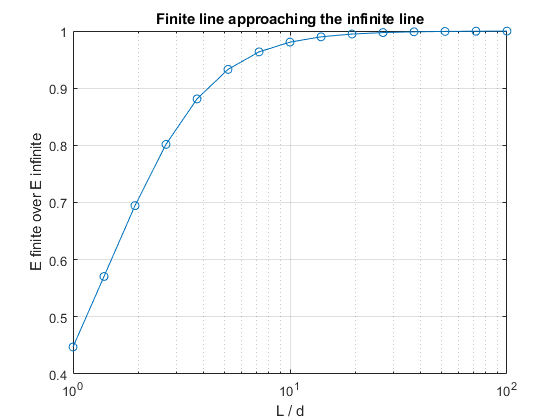

EECE 306 Lab 4 notebook. The Quadrature Engine and Continuous Charge Distributions
*Team 3: Amelia Harris, Carissa McWilliams, Mitch Nazareth. * TODO replace with your team number and member names.
Fill in every TODO, run publish('Lab04_notebook.m') from the toolbox root, print the HTML to PDF, three to five pages.
Contents
Setup
clear; close all;
e0 = em.const.eps0();
Geometry before physics
The sum of the weights must return length, area, and volume with no field anywhere in sight.
circ = @(t)[cos(t) sin(t) zeros(size(t))]; [~, wc] = em.quad.line(circ, [0 2*pi], 400); sph = @(th,ph) [sin(th).*cos(ph) sin(th).*sin(ph) cos(th)]; [~, ws] = em.quad.surf(sph, [0 pi], [0 2*pi], 60, 120); ball = @(u,v,w)[w.*sin(u).*cos(v) w.*sin(u).*sin(v) w.*cos(u)]; [~, wv] = em.quad.vol(ball, [0 pi], [0 2*pi], [0 1], 30, 60, 30); sq = @(u,v)[u v zeros(size(u))]; [~, wq] = em.quad.surf(sq, [0 1], [0 1], 20, 20); fprintf('circle length %.6f expect %.6f\n', sum(wc), 2*pi); em.test.assertClose(sum(wc), 2*pi, 1e-3, 'unit circle arc length'); fprintf('sphere area %.6f expect %.6f\n', sum(ws), 4*pi); em.test.assertClose(sum(ws), 4*pi, 1e-3, 'unit sphere surface'); fprintf('ball volume %.6f expect %.6f\n', sum(wv), 4*pi/3); em.test.assertClose(sum(wv), 4*pi/3, 1e-3, 'unit ball volume'); fprintf('square area %.6f expect %.6f\n', sum(wq), 1); em.test.assertClose(sum(wq), 1, 1e-3, 'unit square area');
circle length 6.283185 expect 6.283185 sphere area 12.567806 expect 12.566371 ball volume 4.189541 expect 4.188790 square area 1.000000 expect 1.000000
Observed order of each rule
Errors are collected in a plain loop, then the standard fitting tool reports the observed order. One representative log log plot is shown.
Iex = exp(1) - 1;
Ns = [8 16 32 64 128]';
rules = {'midpoint', 'trapz', 'simpson'};
for k = 1:3
rule = rules{k};
errs = zeros(size(Ns));
for j = 1:numel(Ns)
[t, w] = em.quad.nodes(0, 1, Ns(j), rule);
errs(j) = abs(sum(exp(t) .* w) - Iex);
end
p = em.test.convergence(@(N) errs(Ns == N), Ns, struct('plot', strcmp(rule,'simpson')));
fprintf('%-9s observed order p = %.2f\n', rule, p);
end
midpoint observed order p = 2.00 trapz observed order p = 2.09 simpson observed order p = 4.00
The Gauss rule does not fit the same mold
for N = [2 4 8 16] [t, w] = em.quad.nodes(0, 1, N, 'gauss'); fprintf('gauss N = %2d error = %.3e\n', N, abs(sum(exp(t) .* w) - Iex)); end % TODO two to four sentences. The three fitted orders above are clean % power laws and the Gauss errors are not. Explain what convergence % faster than any power of N means and why a straight line fit is the % wrong model for it. % The Gauss quadrature is exact for polynomials up to degree 2N - 1, so its % error falls faster than any fixed power of N for a smooth integrand (such % as e^(t)), which means it decreases more rapidly than 1/N^(p) for any % fixed p. Because of this mismatch, the Gauss errors do not follow a % power law relationship, and fitting a straight line to the data gives an % appoximate slope, which is not a good method to measure its convergence.
Finite line against the infinite line formula
d = 1; Lod = logspace(0, 2, 15)'; ratio = zeros(size(Lod)); for k = 1:numel(Lod) L = Lod(k) * d; lineC = @(t)[zeros(size(t)) zeros(size(t)) t]; sl = em.src.lineCharge(1e-9, lineC, [-L/2 L/2], 800); Ef = em.field.E(sl, [d 0 0]); ratio(k) = Ef(1) / (1e-9 / (2*pi*e0*d)); end figure; semilogx(Lod, ratio, 'o-'); grid on xlabel('L / d'); ylabel('E finite over E infinite') title('Finite line approaching the infinite line') iAbove = find(ratio > 0.99, 1); fprintf('ratio first exceeds 0.99 at L/d about %.1f\n', Lod(iAbove));
ratio first exceeds 0.99 at L/d about 19.3

Disk against the infinite sheet formula
h = 1; aoh = logspace(0, 2.1, 14)'; ratioD = zeros(size(aoh)); for k = 1:numel(aoh) a = aoh(k) * h; disk = @(u,v)[u.*cos(v) u.*sin(v) zeros(size(u))]; sd = em.src.surfCharge(1e-9, disk, [0 a], [0 2*pi], 80, 80); Ed = em.field.E(sd, [0 0 h]); ratioD(k) = Ed(3) / (1e-9 / (2*e0)); end figure; semilogx(aoh, ratioD, 'o-'); grid on xlabel('a / h'); ylabel('E disk over E sheet') title('Disk approaching the infinite sheet') iA = find(ratioD > 0.99, 1); fprintf('ratio first exceeds 0.99 at a/h about %.1f\n', aoh(iA));
ratio first exceeds 0.99 at a/h about 59.8
A nonuniform density through the same constructor
lineC = @(t)[zeros(size(t)) zeros(size(t)) t]; sn = em.src.lineCharge(@(r) r(:,3), lineC, [-1 1], 400); em.test.assertClose(sum(sn.q .* sn.w), 0, 1e-6, 'net zero line charge') fprintf('net charge of rho(z) = z on [-1, 1] = %.3e C (expect 0)\n', sum(sn.q .* sn.w));
Interpretation
TODO three to six sentences. The convergence order was measured, not assumed. State one situation later in the course where a wrong observed order will be the first visible symptom of a bug.
% Comparing the observed convergence order against the theoretical order is % a reliable method to catch bugs in the code. For example, a second order % method that measures as first order almost always has a boundary handled % incorrectly, or an off-by-one in the node placement. This will be % important in the next few labs, especially when dealing with weights and % electromagnetic surfaces.
Problems encountered
TODO honest account, or NONE.
% WHen calculating the positions of the nodes, the original test file had % errors with dimension mismatch due to not using element-wise % multiplication. We also had some slight round-off error that affected the % legth/area/volume calculations, but it can be considered negligible % because it is small, and assertClose didn't report any gross % inaccuracies. We had to use the simpson rule for the ball and sphere % surface because the error never fell under tolerance. A similar % situtation occured when printing the nonuniform density with %.3e instead % of %.3f.
Full test suite
runTests
EECE 306 toolbox test suite
--------------------------------------------------------------
24.2.0.3212159 (R2024b) Update 9
eps0 = 8.8541878128e-12 F/m
mu0 = 1.2566370614e-06 H/m
c0 = 2.9979245808e+08 m/s
eta0 = 376.730314 ohm
Derived constant checks passed.
mag([3 4 0]) = 5 (expect 5 exactly)
unit([3 4 0]) =
0.6000 0.8000 0
unit([0 0 0]) (expect all NaN) =
NaN NaN NaN
angle perpendicular = 1.5707963267949 (expect pi/2)
angle antiparallel = 3.14159265358979, real = 1 (expect pi, 1)
fromTo([1 1 1],[2 3 4]) =
1 2 3
mag input 100x3 output [100 1]
unit input 100x3 output [100 3]
angle input 100x3 output [100 1]
fromTo input 100x3 output [100 3]
PASS test_lab01 0.24 s
spherical roundtrip max error = 6.357e-15
cylindrical roundtrip max error = 2.979e-15
c2sph([0 0 1]) =
1 0 0
c2sph([0 0 -1]) =
1.0000 3.1416 0
phi in the four quadrants = 0.7854 2.3562 3.9270 5.4978 rad
all inside [0, 2*pi) = 1
vector roundtrip (spherical pair) max error = 1.088e-15
magnitude change under conversion max = 8.882e-16
vector roundtrip (cylindrical pair) max error = 6.280e-16
at (0, 5, 0), (Ar, Atheta, Aphi) =
3.0000 0.0000 -2.0000
at (4, 0, 0), (Ar, Atheta, Aphi) =
2.0000 0.0000 3.0000
PASS test_lab02 0.19 s
r (m) relative error
1.0000 0
2.0000 0
3.0000 0
4.0000 0
5.0000 0
6.0000 0
7.0000 0
8.0000 0
9.0000 0.0000
10.0000 0
Minimum charge of positive charges = 7.463e-01 (should be greater than 0)
Maximum charge of negative charges = -7.463e-01 (should be less than 0)
max |Ex| on bisector = 0.000e+00 V/m
max |E| on the same plane = 5.061e+02 V/m
element count after first merge = 2 (expect 2)
Mismatch test passed: em.src.merge(q1, crnt_struct) successfully raised an error.
|E(r)| / |E(2r)| = 8.0003 (expect near 8 for a dipole)
Singularity test passed: em.field.E(q, [0 0 0]) successfully raised an error.
em.field.E on 5000 points took 0.005 s (requirement, under 2 s)
Observation points: N = 10, Source Charges: M = 1, Product = 10, Time = 0.000 s
Observation points: N = 100, Source Charges: M = 1, Product = 100, Time = 0.000 s
Observation points: N = 1000, Source Charges: M = 1, Product = 1000, Time = 0.000 s
Observation points: N = 10000, Source Charges: M = 1, Product = 10000, Time = 0.002 s
Observation points: N = 100000, Source Charges: M = 1, Product = 100000, Time = 0.018 s
Observation points: N = 1000000, Source Charges: M = 1, Product = 1000000, Time = 0.155 s
Observation points: N = 10000000, Source Charges: M = 1, Product = 10000000, Time = 1.439 s
Compution time surpasses time threshold at N=100000000 points: took 19.430 seconds
PASS test_lab03 27.12 s
circle length 6.283185 expect 6.283185
sphere area 12.567806 expect 12.566371
ball volume 4.187181 expect 4.188790
square area 1.000000 expect 1.000000
midpoint observed order p = 2.00
trapz observed order p = 2.09
simpson observed order p = 4.00
gauss N = 2 error = 3.855e-04
gauss N = 4 error = 9.330e-10
gauss N = 8 error = 6.661e-16
gauss N = 16 error = 2.887e-15
ratio first exceeds 0.99 at L/d about 19.3
ratio first exceeds 0.99 at a/h about 59.8
net charge of rho(z) = z on [-1, 1] = -0.000 C (expect 0)
PASS test_lab04 4.05 s
flux through sphere = 3.000000e-09 C
enclosed charge = 3.000000e-09 C
relative error = 4.175e-08
flux with charge outside = 0.000 C (consistent with zero)
sphere 3.000000e-09 C
cube 3.000204e-09 C
hemisphere and cap 3.000001e-09 C
charge at x = 0.00 flux = 3.000000e-09 C
charge at x = 0.15 flux = 3.000000e-09 C
charge at x = 0.30 flux = 3.000000e-09 C
Nu = 10 div D inside = 1.0163e-06 rho_v = 1.0000e-06 rel err = 1.63e-02
Nu = 20 div D inside = 1.6814e-06 rho_v = 1.0000e-06 rel err = 6.81e-01
Nu = 40 div D inside = 7.4061e-07 rho_v = 1.0000e-06 rel err = 2.59e-01
div D in charge free space = 0.000 (consistent with zero)
flux with swapped parameter order = -3.000000e-09 C (sign flipped)
PASS test_lab05 1.63 s
--------------------------------------------------------------
5 passed, 0 failed, 5 total
All tests passing.